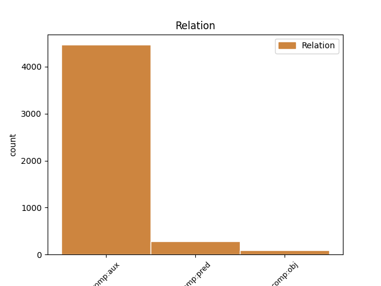
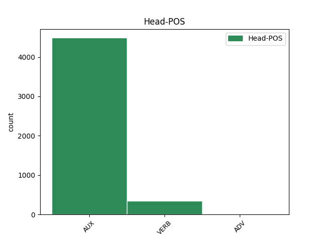
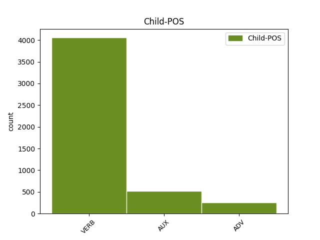

Distribution of features within this leaf



Agreement Rules sorted by frequency.
- When the dependent token is the complement for auxiliary(comp:aux) of the head token,
1 Ovaj _ _ _ _ 0 _ _ _
2 energetski _ _ _ _ 0 _ _ _
3 kontinuum _ _ _ _ 0 _ _ _
4 , _ _ _ _ 0 _ _ _
5 zbog _ _ _ _ 0 _ _ _
6 svog _ _ _ _ 0 _ _ _
7 strogog _ _ _ _ 0 _ _ _
8 kartezijanizma _ _ _ _ 0 _ _ _
9 , _ _ _ _ 0 _ _ _
10 Newton _ _ _ _ 0 _ _ _
11 ne _ _ _ _ 0 _ _ _
12 bi biti AUX Vaa3s Mood=Cnd|Number=Sing|Person=3|Tense=Past|VerbForm=Fin 0 _ _ _
13 priznao priznati VERB Vmp-sm Gender=Masc|Number=Sing|Tense=Past|VerbForm=Part|Voice=Act 12 comp:aux _ SpaceAfter=No
14 , _ _ _ _ 0 _ _ _
15 jer _ _ _ _ 0 _ _ _
16 je _ _ _ _ 0 _ _ _
17 toplinu _ _ _ _ 0 _ _ _
18 , _ _ _ _ 0 _ _ _
19 kao _ _ _ _ 0 _ _ _
20 sekundarno _ _ _ _ 0 _ _ _
21 svojstvo _ _ _ _ 0 _ _ _
22 , _ _ _ _ 0 _ _ _
23 smatrao _ _ _ _ 0 _ _ _
24 nestvarnom _ _ _ _ 0 _ _ _
25 , _ _ _ _ 0 _ _ _
26 odnosno _ _ _ _ 0 _ _ _
27 prividom _ _ _ _ 0 _ _ _
28 svodivim _ _ _ _ 0 _ _ _
29 na _ _ _ _ 0 _ _ _
30 mehanička _ _ _ _ 0 _ _ _
31 svojstva _ _ _ _ 0 _ _ _
32 . _ _ _ _ 0 _ _ _
1 Cijena _ _ _ _ 0 _ _ _
2 barela _ _ _ _ 0 _ _ _
3 sirove _ _ _ _ 0 _ _ _
4 nafte _ _ _ _ 0 _ _ _
5 u _ _ _ _ 0 _ _ _
6 terminskom _ _ _ _ 0 _ _ _
7 kupoprodajnom _ _ _ _ 0 _ _ _
8 futures _ _ _ _ 0 _ _ _
9 ugovoru _ _ _ _ 0 _ _ _
10 s _ _ _ _ 0 _ _ _
11 isporukom _ _ _ _ 0 _ _ _
12 u _ _ _ _ 0 _ _ _
13 mjesecu _ _ _ _ 0 _ _ _
14 rujnu _ _ _ _ 0 _ _ _
15 na _ _ _ _ 0 _ _ _
16 robnoj _ _ _ _ 0 _ _ _
17 burzi _ _ _ _ 0 _ _ _
18 u _ _ _ _ 0 _ _ _
19 New _ _ _ _ 0 _ _ _
20 Yorku _ _ _ _ 0 _ _ _
21 u _ _ _ _ 0 _ _ _
22 četvrtak _ _ _ _ 0 _ _ _
23 je _ _ _ _ 0 _ _ _
24 do _ _ _ _ 0 _ _ _
25 trenutka _ _ _ _ 0 _ _ _
26 pisanja _ _ _ _ 0 _ _ _
27 teksta _ _ _ _ 0 _ _ _
28 porasla _ _ _ _ 0 _ _ _
29 za _ _ _ _ 0 _ _ _
30 0,01 _ _ _ _ 0 _ _ _
31 posto _ _ _ _ 0 _ _ _
32 , _ _ _ _ 0 _ _ _
33 na _ _ _ _ 0 _ _ _
34 72,43 _ _ _ _ 0 _ _ _
35 američkih _ _ _ _ 0 _ _ _
36 dolara _ _ _ _ 0 _ _ _
37 , _ _ _ _ 0 _ _ _
38 nakon _ _ _ _ 0 _ _ _
39 što _ _ _ _ 0 _ _ _
40 je _ _ _ _ 0 _ _ _
41 u _ _ _ _ 0 _ _ _
42 srijedu _ _ _ _ 0 _ _ _
43 dobila dobiti VERB Vmp-sf Gender=Fem|Number=Sing|Tense=Past|VerbForm=Part|Voice=Act 0 _ _ _
44 na _ _ _ _ 0 _ _ _
45 vrijednosti _ _ _ _ 0 _ _ _
46 4,67 _ _ _ _ 0 _ _ _
47 posto _ _ _ _ 0 _ _ _
48 , _ _ _ _ 0 _ _ _
49 porastavši porasti ADV Rr Tense=Past|VerbForm=Conv 43 comp:pred _ _
50 na _ _ _ _ 0 _ _ _
51 72,42 _ _ _ _ 0 _ _ _
52 američka _ _ _ _ 0 _ _ _
53 dolara _ _ _ _ 0 _ _ _
54 . _ _ _ _ 0 _ _ _
1 Aktivisti _ _ _ _ 0 _ _ _
2 Greenpeacea _ _ _ _ 0 _ _ _
3 uspeli _ _ _ _ 0 _ _ _
4 su _ _ _ _ 0 _ _ _
5 se _ _ _ _ 0 _ _ _
6 2. _ _ _ _ 0 _ _ _
7 prosinca _ _ _ _ 0 _ _ _
8 na _ _ _ _ 0 _ _ _
9 150 _ _ _ _ 0 _ _ _
10 metara _ _ _ _ 0 _ _ _
11 visok _ _ _ _ 0 _ _ _
12 dimnjak _ _ _ _ 0 _ _ _
13 elektrane _ _ _ _ 0 _ _ _
14 u _ _ _ _ 0 _ _ _
15 Poljskoj _ _ _ _ 0 _ _ _
16 pozivajući pozivati ADV Rr Tense=Pres|VerbForm=Conv 0 _ _ _
17 je biti AUX Var3s Mood=Ind|Number=Sing|Person=3|Tense=Pres|VerbForm=Fin 16 comp:obj _ _
18 da _ _ _ _ 0 _ _ _
19 odbaci _ _ _ _ 0 _ _ _
20 ugljen _ _ _ _ 0 _ _ _
21 kao _ _ _ _ 0 _ _ _
22 glavni _ _ _ _ 0 _ _ _
23 izvor _ _ _ _ 0 _ _ _
24 energije _ _ _ _ 0 _ _ _
25 te _ _ _ _ 0 _ _ _
26 da _ _ _ _ 0 _ _ _
27 prihvati _ _ _ _ 0 _ _ _
28 europski _ _ _ _ 0 _ _ _
29 plan _ _ _ _ 0 _ _ _
30 borbe _ _ _ _ 0 _ _ _
31 protiv _ _ _ _ 0 _ _ _
32 globalnog _ _ _ _ 0 _ _ _
33 zatopljenja _ _ _ _ 0 _ _ _
34 . _ _ _ _ 0 _ _ _
Disagree Examples:
1 Kaznena _ _ _ _ 0 _ _ _
2 presuda _ _ _ _ 0 _ _ _
3 i _ _ _ _ 0 _ _ _
4 zatvorska _ _ _ _ 0 _ _ _
5 kazna _ _ _ _ 0 _ _ _
6 medijskom _ _ _ _ 0 _ _ _
7 mogulu _ _ _ _ 0 _ _ _
8 Veliji _ _ _ _ 0 _ _ _
9 Ramkovskom _ _ _ _ 0 _ _ _
10 , _ _ _ _ 0 _ _ _
11 koji _ _ _ _ 0 _ _ _
12 je biti AUX Var3s Mood=Ind|Number=Sing|Person=3|Tense=Pres|VerbForm=Fin 0 _ _ _
13 često _ _ _ _ 0 _ _ _
14 kritizirao kritizirati VERB Vmp-sm Gender=Masc|Number=Sing|Tense=Past|VerbForm=Part|Voice=Act 12 comp:aux _ _
15 makedonsku _ _ _ _ 0 _ _ _
16 vladu _ _ _ _ 0 _ _ _
17 , _ _ _ _ 0 _ _ _
18 mogla _ _ _ _ 0 _ _ _
19 bi _ _ _ _ 0 _ _ _
20 zaplašiti _ _ _ _ 0 _ _ _
21 medije _ _ _ _ 0 _ _ _
22 , _ _ _ _ 0 _ _ _
23 kažu _ _ _ _ 0 _ _ _
24 novinari _ _ _ _ 0 _ _ _
25 u _ _ _ _ 0 _ _ _
26 toj _ _ _ _ 0 _ _ _
27 maloj _ _ _ _ 0 _ _ _
28 balkanskoj _ _ _ _ 0 _ _ _
29 državi _ _ _ _ 0 _ _ _
30 . _ _ _ _ 0 _ _ _
1 Ramkovski _ _ _ _ 0 _ _ _
2 , _ _ _ _ 0 _ _ _
3 bivši _ _ _ _ 0 _ _ _
4 vlasnik _ _ _ _ 0 _ _ _
5 televizijske _ _ _ _ 0 _ _ _
6 postaje _ _ _ _ 0 _ _ _
7 A1 _ _ _ _ 0 _ _ _
8 , _ _ _ _ 0 _ _ _
9 četiriju _ _ _ _ 0 _ _ _
10 novina _ _ _ _ 0 _ _ _
11 i _ _ _ _ 0 _ _ _
12 drugih _ _ _ _ 0 _ _ _
13 poduzeća _ _ _ _ 0 _ _ _
14 , _ _ _ _ 0 _ _ _
15 osuđen _ _ _ _ 0 _ _ _
16 je _ _ _ _ 0 _ _ _
17 na _ _ _ _ 0 _ _ _
18 Kaznenom _ _ _ _ 0 _ _ _
19 sudu _ _ _ _ 0 _ _ _
20 u _ _ _ _ 0 _ _ _
21 Skoplju _ _ _ _ 0 _ _ _
22 14. _ _ _ _ 0 _ _ _
23 ožujka _ _ _ _ 0 _ _ _
24 na _ _ _ _ 0 _ _ _
25 13 _ _ _ _ 0 _ _ _
26 godina _ _ _ _ 0 _ _ _
27 zatvora _ _ _ _ 0 _ _ _
28 zbog _ _ _ _ 0 _ _ _
29 pranja _ _ _ _ 0 _ _ _
30 novca _ _ _ _ 0 _ _ _
31 , _ _ _ _ 0 _ _ _
32 kriminalne _ _ _ _ 0 _ _ _
33 zavjere _ _ _ _ 0 _ _ _
34 , _ _ _ _ 0 _ _ _
35 zloporabe _ _ _ _ 0 _ _ _
36 položaja _ _ _ _ 0 _ _ _
37 i _ _ _ _ 0 _ _ _
38 utaje _ _ _ _ 0 _ _ _
39 poreza _ _ _ _ 0 _ _ _
40 ; _ _ _ _ 0 _ _ _
41 19 _ _ _ _ 0 _ _ _
42 suučesnika _ _ _ _ 0 _ _ _
43 dobilo dobiti VERB Vmp-sn Gender=Neut|Number=Sing|Tense=Past|VerbForm=Part|Voice=Act 44 comp:aux _ _
44 je biti AUX Var3s Mood=Ind|Number=Sing|Person=3|Tense=Pres|VerbForm=Fin 0 _ _ _
45 zatvorske _ _ _ _ 0 _ _ _
46 kazne _ _ _ _ 0 _ _ _
47 u _ _ _ _ 0 _ _ _
48 trajanju _ _ _ _ 0 _ _ _
49 od _ _ _ _ 0 _ _ _
50 dvije _ _ _ _ 0 _ _ _
51 do _ _ _ _ 0 _ _ _
52 sedam _ _ _ _ 0 _ _ _
53 godina _ _ _ _ 0 _ _ _
54 . _ _ _ _ 0 _ _ _
1 Televizija _ _ _ _ 0 _ _ _
2 A1 _ _ _ _ 0 _ _ _
3 i _ _ _ _ 0 _ _ _
4 četiri _ _ _ _ 0 _ _ _
5 novine _ _ _ _ 0 _ _ _
6 zatvoreni _ _ _ _ 0 _ _ _
7 su _ _ _ _ 0 _ _ _
8 zato _ _ _ _ 0 _ _ _
9 što _ _ _ _ 0 _ _ _
10 nisu biti AUX Var3p Mood=Ind|Number=Plur|Person=3|Polarity=Neg|Tense=Pres|VerbForm=Fin 0 _ _ _
11 plaćali plaćati VERB Vmp-pm Gender=Masc|Number=Plur|Tense=Past|VerbForm=Part|Voice=Act 10 comp:aux _ _
12 porez _ _ _ _ 0 _ _ _
13 i _ _ _ _ 0 _ _ _
14 ispunjavali _ _ _ _ 0 _ _ _
15 obveze _ _ _ _ 0 _ _ _
16 prema _ _ _ _ 0 _ _ _
17 vjerovnicima _ _ _ _ 0 _ _ _
18 . _ _ _ _ 0 _ _ _
1 " _ _ _ _ 0 _ _ _
2 Dojam _ _ _ _ 0 _ _ _
3 je _ _ _ _ 0 _ _ _
4 da _ _ _ _ 0 _ _ _
5 su _ _ _ _ 0 _ _ _
6 koraci _ _ _ _ 0 _ _ _
7 poduzeti _ _ _ _ 0 _ _ _
8 prema _ _ _ _ 0 _ _ _
9 tim _ _ _ _ 0 _ _ _
10 medijima _ _ _ _ 0 _ _ _
11 , _ _ _ _ 0 _ _ _
12 kojima _ _ _ _ 0 _ _ _
13 su _ _ _ _ 0 _ _ _
14 izrečene _ _ _ _ 0 _ _ _
15 presude _ _ _ _ 0 _ _ _
16 , _ _ _ _ 0 _ _ _
17 selektivni _ _ _ _ 0 _ _ _
18 te _ _ _ _ 0 _ _ _
19 da _ _ _ _ 0 _ _ _
20 institucije _ _ _ _ 0 _ _ _
21 ne _ _ _ _ 0 _ _ _
22 koriste _ _ _ _ 0 _ _ _
23 iste _ _ _ _ 0 _ _ _
24 metode _ _ _ _ 0 _ _ _
25 u _ _ _ _ 0 _ _ _
26 provođenju _ _ _ _ 0 _ _ _
27 zakona _ _ _ _ 0 _ _ _
28 prema _ _ _ _ 0 _ _ _
29 svim _ _ _ _ 0 _ _ _
30 medijima _ _ _ _ 0 _ _ _
31 " _ _ _ _ 0 _ _ _
32 , _ _ _ _ 0 _ _ _
33 izjavila izjaviti VERB Vmp-sf Gender=Fem|Number=Sing|Tense=Past|VerbForm=Part|Voice=Act 34 comp:aux _ _
34 je biti AUX Var3s Mood=Ind|Number=Sing|Person=3|Tense=Pres|VerbForm=Fin 0 _ _ _
35 za _ _ _ _ 0 _ _ _
36 SETimes _ _ _ _ 0 _ _ _
37 ravnateljica _ _ _ _ 0 _ _ _
38 Medijskog _ _ _ _ 0 _ _ _
39 instituta _ _ _ _ 0 _ _ _
40 Makedonije _ _ _ _ 0 _ _ _
41 Biljana _ _ _ _ 0 _ _ _
42 Petkovska _ _ _ _ 0 _ _ _
43 . _ _ _ _ 0 _ _ _
1 Neki _ _ _ _ 0 _ _ _
2 novinari _ _ _ _ 0 _ _ _
3 , _ _ _ _ 0 _ _ _
4 a _ _ _ _ 0 _ _ _
5 posebice _ _ _ _ 0 _ _ _
6 bivši _ _ _ _ 0 _ _ _
7 zaposlenici _ _ _ _ 0 _ _ _
8 A1 _ _ _ _ 0 _ _ _
9 TV _ _ _ _ 0 _ _ _
10 , _ _ _ _ 0 _ _ _
11 tvrde _ _ _ _ 0 _ _ _
12 da _ _ _ _ 0 _ _ _
13 taj _ _ _ _ 0 _ _ _
14 slučaj _ _ _ _ 0 _ _ _
15 , _ _ _ _ 0 _ _ _
16 pod _ _ _ _ 0 _ _ _
17 nazivom _ _ _ _ 0 _ _ _
18 " _ _ _ _ 0 _ _ _
19 Paukova _ _ _ _ 0 _ _ _
20 mreža _ _ _ _ 0 _ _ _
21 " _ _ _ _ 0 _ _ _
22 , _ _ _ _ 0 _ _ _
23 predstavlja _ _ _ _ 0 _ _ _
24 borbu _ _ _ _ 0 _ _ _
25 između _ _ _ _ 0 _ _ _
26 vlade _ _ _ _ 0 _ _ _
27 i _ _ _ _ 0 _ _ _
28 tada _ _ _ _ 0 _ _ _
29 najmoćnije _ _ _ _ 0 _ _ _
30 televizijske _ _ _ _ 0 _ _ _
31 postaje _ _ _ _ 0 _ _ _
32 u _ _ _ _ 0 _ _ _
33 Makedoniji _ _ _ _ 0 _ _ _
34 , _ _ _ _ 0 _ _ _
35 koja _ _ _ _ 0 _ _ _
36 je biti AUX Var3s Mood=Ind|Number=Sing|Person=3|Tense=Pres|VerbForm=Fin 0 _ _ _
37 kritizirala kritizirati VERB Vmp-sf Gender=Fem|Number=Sing|Tense=Past|VerbForm=Part|Voice=Act 36 comp:aux _ _
38 njezinu _ _ _ _ 0 _ _ _
39 politiku _ _ _ _ 0 _ _ _
40 i _ _ _ _ 0 _ _ _
41 podupirala _ _ _ _ 0 _ _ _
42 oporbu _ _ _ _ 0 _ _ _
43 . _ _ _ _ 0 _ _ _